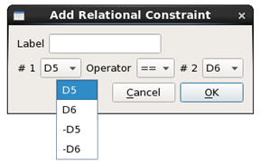
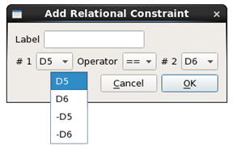

Adding a Relational Constraint
Relational constraints specify a relation between two edge to edge measurements. For example, two polygons may have variable widths, but require the same width for a successful pattern match. You can specify relational constraints in both TEM and BCM patterns.
See “Relational Constraints” for examples and explanation.
Prerequisites
A pattern library is open in the Calibre Pattern Matching GUI. See “Invoking the Calibre Pattern Matching GUI”.
A pattern with two edge to edge constraints is selected in the pattern list. This can be a TEM pattern or a single layer BCM pattern. See these topics:
Procedure
- Click the Add Relational Constraint (
 ) button above the
pattern canvas. This opens a dialog box. 
) button above the
pattern canvas. This opens a dialog box. 
Results
A TEM pattern with a relational constraint is shown in the following figure. The relational constraint is listed in the “Relational” section of the constraint list, but is not indicated in the pattern canvas.
Hide the single edge constraints in order to see the end connectors of the edge to edge constraint.